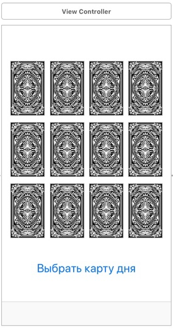
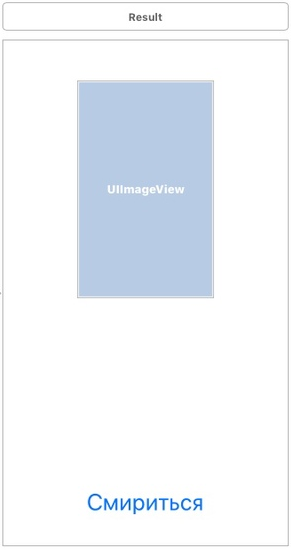

//
// ViewController.swift
// iFortune
//
// Created by MacOS on 01.02.21.
// Copyright © 2021 MacOS. All rights reserved.
//
import UIKit
class ViewController: UIViewController {
var card: Int = 0 //инициализация переменной id кнопки
override func viewDidLoad() {
super.viewDidLoad()
}
@IBAction func rezult(_ sender: Any) { // инициализация функции нажатия на кнопку «Выбрать карту дня»
}
override func prepare(for segue: UIStoryboardSegue, sender: Any?) {
let dest:Result = segue.destination as! Result
dest.cardNum = card
} //передача значений id кнопки во второе окно при переключении
@IBAction func c0(_ sender: Any) {
card = 0
} //обработка нажатия кнопки
@IBAction func c1(_ sender: Any) {
card = 1
}
@IBAction func c2(_ sender: Any) {
card = 2
}
@IBAction func c3(_ sender: Any) {
card = 3
}
… //аналогично происходит обработка нажатий остальных кнопок
}

//
// Result.swift
// iFortune
//
// Created by MacOS on 01.02.21.
// Copyright © 2021 MacOS. All rights reserved.
//
import UIKit
class Result: UIViewController {
var cardNum:Int = 0
var items = [0,1,2,3,4,5,6,7,8,9,10,11] // последовательность карт, которая будет перемешиваться
var items_copy = [0,1,2,3,4,5,6,7,8,9,10,11]// для восстановления последовательности
var shuffled_items = [Int]()
@IBOutlet weak var textLable: UILabel!
@IBOutlet weak var cardImage: UIImageView!
@IBOutlet weak var nameCard: UILabel!
@IBAction func back(_ sender: AnyObject) {
dismiss(animated: true, completion: nil) } //возвращение на первое окошко (кнопка смириться)
override func viewDidLoad() {
super.viewDidLoad()
for _ in 0..< items.count{ // цикл для рандомной перестановки
let rand = Int(arc4random_uniform(UInt32(items.count)))
shuffled_items.append(items[rand])
items.remove(at: rand)
}
items = items_copy
if shuffled_items[cardNum] == 0 { //сопоставление номера карты и результата
cardImage.image = UIImage(named:"card0")
nameCard.text = "Дурак"
textLable.text = "Вам предстоит много новых и интересных дел. В личной жизни не помешают романтика и комплементы.
Доверяйте инстинктам и верьте в мечты."
}
if shuffled_items[cardNum] == 1 {
cardImage.image = UIImage(named:"card1")
nameCard.text = "Маг"
textLable.text = "Необходимо проявить свою инициативу, показать логику и благорозумие. Ничего не помешает принять
решение. Нужно использовать свои силы и не бояться рисковать."
}
if shuffled_items[cardNum] == 2 {
cardImage.image = UIImage(named:"card2")
nameCard.text = "Верховная жрица"
textLable.text = "Прислушайтесь к внутреннему голосу и перестаньте искать оправдания. Обязательно проявляйте
доброту к окружающим."
}
if shuffled_items[cardNum] == 3 {
cardImage.image = UIImage(named:"card3")
nameCard.text = "Императрица"
textLable.text = "Сегодня вас ждет увлекательный день. Позабытые обстоятельства начнут бурно развиваться.
Вас ожидает успех, а все потому что интуиция ведет вас в правильном направлении."
}
//остальные сравнения происходят аналогично
}
